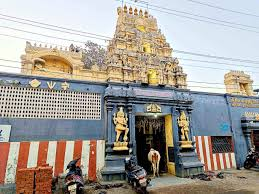

<BODY>
	
</BODY>

<UL >
The Siva Vishnu Temple in the Madipakkam residential area in the south of Chennai is a small divine temple complex consisting of Lord Shiva, Lord Vishnu, Lord Vinayaka, Lord Hanuman, Lord Ayyappa, Navagraha's along with many other Gods.

This famous Siva Vishnu temple in the busy area of Madipakkam has a beautiful pond behind.
The Moola Virat is Omkareshwar and Goddess Amba emerged in the form of Maha Tripura Sundari Devi. Temple has ample space inside to sit, relax and meditate by chanting the name of Lord and feel the positive vibes inside the temple.

This is one of the best temple to visit when you are in this Madipakkam area and the local residents are blessed to find all moorthis along with Lord Shiva and Lord Vishnu present under one roof.
</UL>

<BODY>
<BODY>